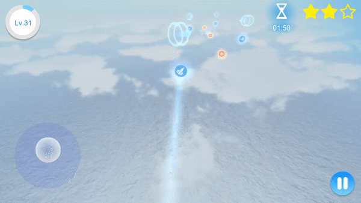
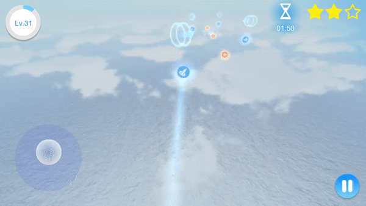
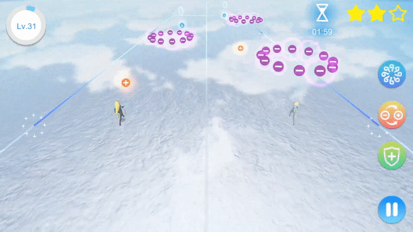

The largest salt flat — Uyuni salt flat in Bolivia is well known for its heaven-like scenery, which inspired me to develop a game based on this place. It is so amazing and worth everyone to visit and appreciate, and that becomes the main reason why I made Sky Mirror · Strolling.
Based on my knowledge, relaxing game or casual game would be the suitable game genre. It would be good if the game mechanics can let players release their pressure and relax in this place. Those kind of game mechanics fit this theme the most. Then I started to think about the game content. What makes people feel relaxed ? For this place, apparently there is a keyword “mirror”. A game relative to mirror still fits the concept, but it hardly says that mirrors are playable. Players play with mirrors in this game ? I still need more details to support the game concept. What are mirrors used for ? Reflecting something. Later a special idea came up to my mind: mirrors reflect energy as well, and the word “energy” reminded me of two reverse elements: positive energy and negative energy. This kind of topic hasn’t been widely applied in video games, why not make good use of them ?
There is gold coin collecting in many other games. However, there are two reasons that I don’t implement it in this game: 1. A large amount of coins floating on sky mirror is so strange, that looks materialism. Where do these coins come from and why do players need to collect coins in this place ? I couldn’t give reasonable explanation. 2. I want to be creative, and I just thought of positive energy and negative energy, it is good enough to let players collect positive energy instead of coins. According to the features of this place, the environment should be made completely safe to maintain its peaceful atmosphere, but a completely safe area doesn’t look fun and challenging, then negative energy reasonably becomes the obstacles. Getting hurt doesn’t make people feel positive, so there is no health value in this game. The character will never get hurt, instead, her amount of positive energy will decrease when she touches negative energy.

Both positive energy and negative energy are invisible, so it is important to visualize and make them recognizable. I have the habit of making good use of minimalist, so I kept these two elements simple by using a plus sign and minus sign to represent them. Orange belongs to warm colours while purple belongs to cool colours.


There is some machine-like design, the character can trigger some moveable machine arms. Using realistic machines does not fit the environment, therefore, I used abstract objects to represent them.
 

Based on the atmosphere of sky mirror, gameplay should be less intensive. Puzzle game was the category that I wanted to try, but pure puzzle game doesn’t seem like refreshing, because it keeps players thinking when solving puzzles. Therefore, I planned to keep the puzzles lightweight and at the same time, introduce some action and adventure content. Teleporting would be a good option.

Overall, the above features are form the gameplay of Mirror of Introspection(There are many mirrors in the scene, each mirror represents an entrance). Basically it contains two main gameplays: 1. Action-based gameplay, which is comparatively fast-paced, including teleporting mechanic, dynamic negative energy obstacles and time limit. 2. Puzzle gameplay, which will slow down the game procedure and let players think, including simple switch mechanic and constellation puzzle solving.

Another interesting feature is mirroring: The virtual image in the mirror is reverse. When an object turns left, its virtual image will turn right. When the character’s virtual image touches negative energy, the character herself will lose positive energy as well. This game mechanic is robust enough and no concern of running out of content. Different kinds of obstacles and paths can form into lots of different combinations, which makes designing a large amount of levels easier. This game is not finished yet, new game mechanics and game levels will be introduced soon. I hope this game will evolve better and better.